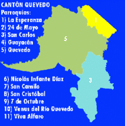

QUEVEDO🇪🇨

| HOME | GALERíA | SITUACIÓN GEOGÁFICA | COSTUMBRES | SITIOS TURíSTICOS |
|---|
| SITUACIÓN GEOGRÁFICA DE QUEVEDO | |||
|---|---|---|---|
| DIVISIÓN POLÍTICA (Parroquias urbanas) | MAPA | CARACTERÍSTICAS | LÍMITES |
|
 |
CLIMALa región se caracteriza por un clima tropical monzón caluroso, con una estación FLORA En cuanto a flora existente en la zona se puede observar la presencia de especies FAUNAEn este lugar habitan monos, aves de corral, zorros, iguanas, cusumbe, guanta, guatusa, |
|